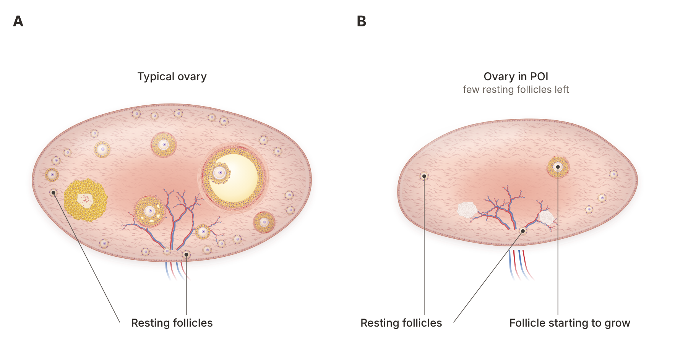

Quick answer: POI (premature ovarian insufficiency) means your ovaries slow down before age 40, but it is not the same as menopause: about 1 in 4 women with POI see their ovaries wake up again at some point, and some conceive on their own. Pregnancy with POI is possible through natural conception during those windows, own-egg IVF timed to them, ovarian rejuvenation research, or donor eggs. The most useful first step is finding out whether your ovaries are still active, because that decides which path fits you.
In this article
Premature ovarian insufficiency (POI) is a loss of normal ovarian activity before age 40. Your ovaries make fewer hormones and release eggs rarely or unpredictably, so periods become irregular or stop.
Many women describe it as "going through menopause early," and the older name, premature ovarian failure, made it sound final. Doctors moved away from that name for a good reason. With POI, the ovaries usually still hold some follicles (the tiny sacs that each contain an immature egg), and they can switch back on without warning. That is the key difference from menopause, and it is why we never treat POI as a closed door.
The 2024 international guideline on POI, written jointly by the European Society of Human Reproduction and Embryology (ESHRE), the American Society for Reproductive Medicine (ASRM) and the International Menopause Society, defines it with two findings:
Irregular periods or no periods for at least 4 months, before age 40.
A follicle-stimulating hormone (FSH) level above 25 IU/L.
The same guideline notes that POI is more common than once thought: estimates range from about 1% of women in older studies to 3.5% in recent ones. You are far from alone.
The early signs are often easy to miss or to blame on stress:
Periods that become irregular, lighter, or stop for months
Hot flashes and night sweats
Vaginal dryness or pain during sex
Trouble sleeping, low mood, irritability or poor focus
Difficulty getting pregnant, which is sometimes the first and only sign
If you have missed periods for several months before 40, ask for an FSH and estradiol blood test rather than waiting. Our post on perimenopause and pregnancy explains how these symptoms differ from normal hormonal shifts later in life.
Most of the time, no single cause is found. According to MedlinePlus from the US National Library of Medicine, the cause is unknown in about 90% of cases. When a cause is found, it usually falls into one of four groups.
Changes on the X chromosome are the best known. Turner syndrome (a missing or partly missing X chromosome) and a Fragile X premutation (a change in the FMR1 gene) can both lead to early loss of follicles. A Fragile X result also matters for sisters and other relatives, so this test is worth doing even when it feels like a long shot.
Sometimes the immune system attacks ovarian tissue, often alongside thyroid disease or adrenal problems. This is one reason RFC's reproductive immunology program looks at the whole immune picture, not just the ovaries.
Chemotherapy, pelvic radiation and ovarian surgery can all reduce the follicle pool. If you are facing one of these treatments, egg freezing beforehand protects your future options, and RFC has no age or weight cutoff for it.
Smoking, some chemicals and certain infections have been linked to earlier ovarian decline. These are rarely the whole story, but stopping smoking is one change that helps both your ovaries and your heart.
Diagnosis needs a blood test and a careful history. The 2024 guideline says a single FSH result above 25 IU/L, together with typical symptoms, is now enough to diagnose POI, with a repeat test after 4 to 6 weeks if there is doubt.
That can feel abrupt. One woman remembered simply, "I was told that I wasn't producing any eggs." Another wrote that she was "finding it very hard to accept." Both reactions are normal, and the Australian Journal of General Practice notes that psychological support should be offered to every woman with this diagnosis.
POI lowers fertility in two ways. There are fewer follicles left, and the ones that remain do not respond to your body's signals in a regular rhythm. So ovulation becomes rare and unpredictable rather than impossible.
High FSH is your brain's way of shouting at quiet ovaries. Our guide to fertility treatment for high FSH explains why piling on more FSH medication rarely helps, and what does. If your anti-Müllerian hormone (AMH) is also very low, our post on how to boost AMH separates what changes the number from what changes your odds.
Low estrogen affects your bones, heart, brain and vaginal health. The guideline recommends hormone therapy for women with POI until the usual age of menopause, and it states that this therapy does not lower your chances of natural conception. In other words, protecting your health and trying for a baby are not in conflict. For dryness or painful sex, RFC also offers vaginal and sexual health care.
The research shows that premature ovarian failure pregnancy is uncommon but real, and that the ovaries of many women with POI are not completely silent. The numbers below come from the studies linked in this section.
The largest follow-up study, published in the Journal of Clinical Endocrinology and Metabolism, followed 358 women with POI of unknown cause. Of them, 86 (24%) showed signs that their ovaries had started working again, most within the first year after diagnosis. Fifteen women (4.4%) had a total of 21 natural pregnancies and 16 births. The ASRM patient fact sheet puts the share who may conceive with their own eggs at about 10%.
Researchers are also testing ways to wake up resting follicles:
Ovarian platelet-rich plasma (PRP). In a 2020 study in Aging, 311 women aged 24 to 40 with POI received PRP injected into the ovaries. Afterward, 23 (7.4%) conceived naturally, 201 (64.8%) grew follicles and went on to IVF, and 25 (8.0%) reached a live birth or ongoing pregnancy.
PRP across low-reserve conditions. A 2024 meta-analysis in the Journal of Ovarian Research pooled 38 studies of 2,256 women, including women with POI. The antral follicle count rose by an average of 1.60, the pooled natural pregnancy rate was 0.07 (7%) and the live birth rate was 0.11 (11%). The authors note most studies were observational and of variable quality.
In vitro activation (IVA). In a 2013 PNAS study, ovarian tissue from women with POI was treated in the lab to wake dormant follicles. Residual follicles were found in 13 of 27 women, and one healthy baby was born.
Adipose-PRP. A 2025 report in the American Journal of Stem Cells described the first live births after a combination of the woman's own fat-derived cells and PRP. In one woman, the antral follicle count rose from 2 to 14 and she conceived naturally about six months later.
What was studied | Women | Key result | Source |
Ovaries waking up on their own | 358 | 24% resumed function; 4.4% conceived naturally | JCEM, 2011 |
Ovarian PRP in POI | 311 | 7.4% natural pregnancy; 8.0% live birth or ongoing pregnancy | Aging, 2020 |
PRP in low reserve, pooled | 2,256 | Follicle count up 1.60; 11% live birth | J Ovarian Res, 2024 |
In vitro activation | 27 | Follicles found in 13; one birth | PNAS, 2013 |

Here is the honest summary. The 2024 guideline says no treatment has yet been proven in controlled trials to restore ovarian activity reliably, which is why these approaches are still studied. At the same time, the studies above show that a meaningful share of women with POI still have follicles that can respond. That is the opening RFC works with, through PRP and adipose-PRP ovarian rejuvenation, which is designed to support a quiet ovary. Our deeper review of ovarian PRP research covers who it helps most.
You can find out whether your ovaries are still active by tracking a few simple signals over time. This is the question most pages on POI never answer, even though it decides your next step.
One woman wrote that she did not want to look at donor eggs "without knowing for sure that i cant do it with my own." That is a fair request, and testing can give you a real answer instead of a guess.
Any period, even a rare one. A bleed after months without one can mean a follicle grew and you ovulated.
A lower FSH reading. FSH that drops well below 25 IU/L on a repeat test suggests the ovaries are responding again.
A rising estradiol level. Estradiol (the main estrogen) climbs when a follicle grows.
A follicle on ultrasound. A follicle seen on a transvaginal ultrasound is the clearest sign of all.
A positive ovulation test or a rise in progesterone in the second half of a cycle.
Repeat bloodwork. FSH, estradiol and AMH, checked more than once, because single results swing.
Serial ultrasounds. Short scans across a few weeks to catch a growing follicle.
Cycle tracking. You note any bleeding, and we time blood tests to it.
A plan for the moment a follicle appears. If one grows, we can time intercourse, an IUI, or a natural IVF cycle to collect that egg.
Because most ovarian activity in the 358-woman study returned within the first year, checking early matters. If you were asking yourself, "Should I ask for a second opinion?", this is exactly what a second opinion should include.
The choice depends on whether your ovaries show any activity, how much time you want to spend trying, and how you feel about genetics. Neither path is second best.
Own eggs make sense when:
Testing shows occasional follicles or ovulation
You are early after diagnosis, when activity is most likely to return
You want to try ovarian rejuvenation and natural or mini IVF first, using RFC's three types of IVF
Donor eggs make sense when:
Months of monitoring show no follicle growth
You want the highest chance per transfer
You have tried own-egg cycles and are ready for a faster path
The 2024 guideline calls egg donation an established way to achieve pregnancy after POI, and the ASRM fact sheet describes it as the most reliable one. RFC's donor egg program reports a 95% egg thaw survival rate and an 82% clinical pregnancy rate. Our donor eggs procedure guide walks through each step.
One detail many women do not hear: if you are thinking of using a sister as your donor, the Australian review found a higher cycle cancellation rate with sister donors (30.8%) than with anonymous donors (6.6%). Because some POI causes run in families, a sister should be tested first.
Many women do both: they monitor and try with their own eggs for a set period, then move to donor eggs if nothing changes. Because RFC has no age cutoff, that window does not have to be rushed.
The fastest way forward is one consultation that confirms the diagnosis, looks for a cause and checks for ovarian activity. Here is how it usually goes.
Confirm the diagnosis. FSH and estradiol, repeated if results are unclear.
Look for a cause. A chromosome test (karyotype), a Fragile X gene test, thyroid tests and autoimmune antibodies.
Protect your health. Start or adjust hormone therapy and check bone health. This does not reduce your chance of natural conception.
Check for ovarian activity. Repeat bloodwork and ultrasounds over several weeks.
Choose your path. Timed natural cycles or natural IVF if a follicle appears, ovarian rejuvenation, donor eggs, or a combination.
Questions worth asking any fertility doctor after a POI diagnosis:
Has my diagnosis been confirmed, and was a cause looked for?
How will you check whether my ovaries are still active, and how often?
If a follicle grows, can you collect that one egg with natural IVF?
Am I a candidate for ovarian rejuvenation?
If I choose donor eggs, can I keep trying with my own eggs first?
Costs depend on the path you choose. RFC's pricing page lists current fees, and a fertility workup is the place every plan starts. If you are under 40 with a straightforward fertility picture rather than POI, our sister clinic Aurea Fertility Center may suit you. For lifestyle steps, our post on reversing premature ovarian failure naturally covers nutrition and habits.
Yes. In a study of 358 women with POI, 4.4% conceived naturally and 24% showed their ovaries working again at some point. Many more become pregnant through donor eggs, and own-egg IVF timed to a growing follicle is another option.
No. In menopause the ovaries have stopped for good, while with POI they often still hold follicles and can switch back on. That is why women with POI are still counselled about contraception if they do not want a pregnancy.
Irregular or missed periods are usually the first sign, often with hot flashes, night sweats, vaginal dryness or trouble sleeping. Some women notice nothing until they have trouble getting pregnant. An FSH blood test confirms it.
The 2024 international guideline uses an FSH level above 25 IU/L, together with at least 4 months of irregular or absent periods before age 40. One test is usually enough, with a repeat after 4 to 6 weeks if the picture is unclear.
It is still being studied, and results vary. In one study of 311 women with POI, 7.4% conceived naturally after PRP and 8.0% reached a live birth or ongoing pregnancy. RFC offers PRP and adipose-PRP ovarian rejuvenation designed to support follicle growth.
The 2024 guideline recommends hormone therapy for POI until the usual age of menopause and says it does not lower your chances of natural conception. It protects your bones and heart while you work on your fertility plan.
POI is a hard diagnosis, and it is not the end of your fertility story. Many women with POI (premature ovarian insufficiency) still have follicles that can wake up, and every path, from timed natural cycles to rejuvenation and donor eggs, starts with finding out what your ovaries are doing now.
At Rejuvenating Fertility Center, women with POI are not turned away; they are who we specialize in. Book a consultation and we will confirm your diagnosis, check for ovarian activity, and lay out every option that fits you. If you live outside New York or Connecticut, you can do monitoring locally and travel to us for the key steps.